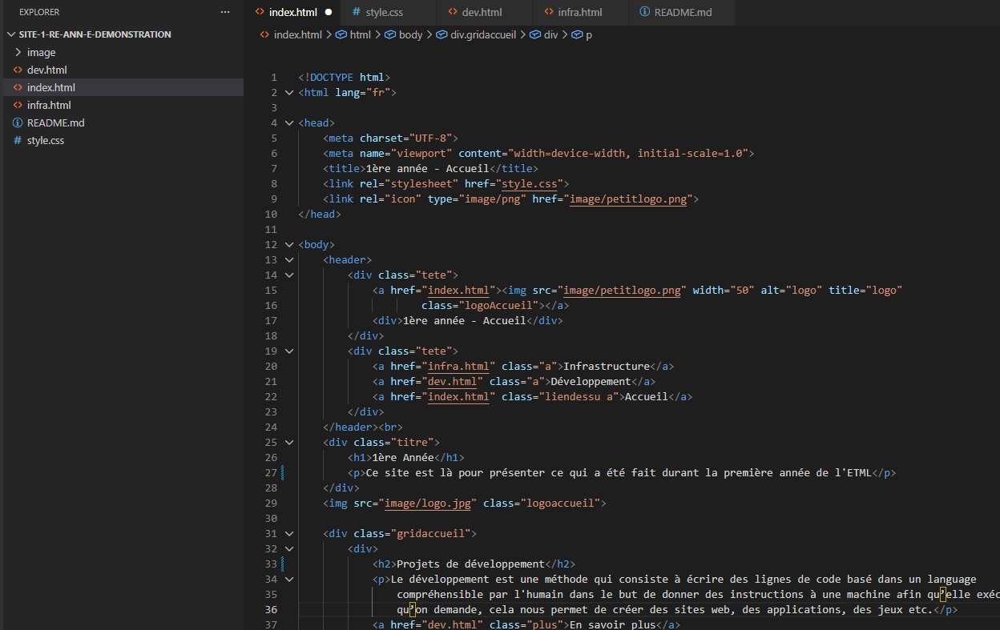
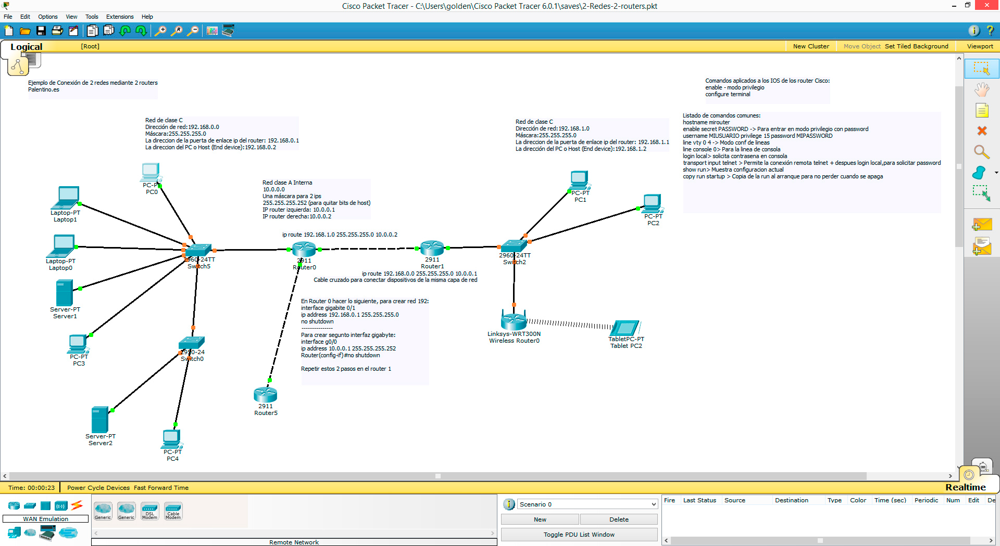

1ère année - Accueil
Ce site est là pour présenter ce qui a été fait durant la première année de l'ETML
Le développement est une méthode qui consiste à écrire des lignes de code basé dans un language compréhensible par l'humain dans le but de donner des instructions à une machine afin qu'elle exécute ce qu'on demande, cela nous permet de créer des sites web, des applications, des jeux etc.
En savoir plus

L'infrastructure informatique désigne l'ensemble des composants matériels, logiciels et réseaux nécessaires au fonctionnement et à la gestion des environnements informatiques d'une organisation. Elle constitue la base sur laquelle reposent les services numériques, les applications métier et les processus critiques.
En savoir plus